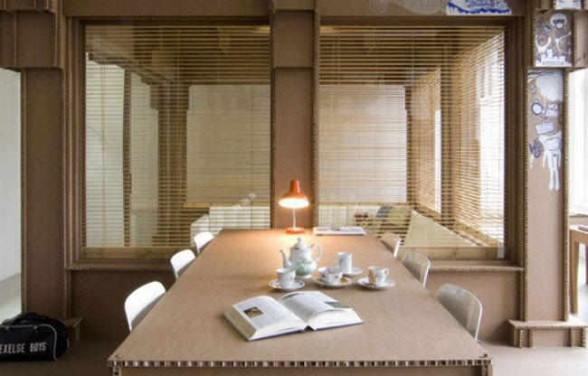

Большая часть современных людей, практически, весь день проводит в офисе. Поэтому хочется обеспечить наиболее комфортные и гармоничные условия такого пребывания. Современная экологическая концепция «зеленого рабочего пространства» демонстрирует подобный «идеальный офис». Обустроить такой офис вполне возможно, дополнив обстановку природными составляющими. Однако, как сделать из небольшого среднестатистического помещения современный экологический офис?
Порой мы отбрасываем тот факт, что плохо себя чувствуем, и показываем неэффективную работу вследствие воздействия внешних факторов (низкокачественное неестественное освещение, вредные материалы мебели, низкая ионизация воздуха, магнитные поля). Поэтому важно заказать офисную мебель, выполненную из экологически чистых материалов, и имеющую высокие эргономичные характеристики. Обязательно нужно продумать озеленение, очистку воздуха, освещение и другие нюансы.
Экологические офисы представляют собой концепцию создания эффективного рабочего пространства, отличающегося удобной и здоровой атмосферой.
Прежде всего, соблюдается ряд ключевых требований:
- экологически чистая мебель,
- очищенный вентилируемый воздух,
- высококачественная шумоизоляция,
- передовые системы сохранения ресурсов и уничтожения/переработки отходов.
Практически все экоофисы сегодня имеют светлое оформление.
В «зеленом» офисе могут выделяться специальные зоны для отдыха, имеющие детали природного ландшафта (маленькие фонтаны, моховое озеленение стен, отделочные материалы из дерева и т. д.). Благодаря этому, помещение становится более подходящим для улучшения самочувствия и поднятия настроя сотрудников. Многие компании хотят обеспечить лучшие условия для персонала, создавая особые капсулы, позволяющие работать лежа.
Благодаря озеленению, в офисе становится не только больше кислорода, но и достигаются другие результаты, позволяющие сотрудникам чувствовать себя значительно лучше. Растительность впитывает в себя около 90% вредных веществ (формальдегид, ксилол, толуол и т. п.) и синтезирует фитонциды. Последние препятствуют развитию вредоносных бактерий и грибков, предотвращая возникновение аллергии и респираторных недугов у работников.
Наличие зелени в офисном помещении улучшает звукоизоляцию, успокаивает, позволяет сотрудникам избавиться от стресса или снизить его уровень.
Растения часто применяются, с целью выделения отдельных функциональных зон в помещении. Для этого используются специальные перегородки. Подобные конструкции позволяют эффективно зонировать пространство, обеспечив прохождение достаточного уровня естественного освещения.
Для формирования в офисе настоящей натуральной экосистемы, часто применяются, так называемые, «вертикальные сады», позволяющие дополнительно создать оригинальный дизайнерский эффект в помещении. К примеру, в одном Нью-Йоркском офисе реализовали модель самого большого и популярного манхэттенского парка. Вертикальное озеленение для этого офиса было спроектировано в виде уменьшенного ландшафта парка, полностью соответствующего оригиналу. Получившийся «вертикальный сад» выполняет, помимо декоративной функции, прежде всего, экологическую, очищая воздух внутри здания, и улучшая микроклимат.
Одна из компаний Шанхая создала один из лучших «зеленых» офисов во всем мире. В нем работает система сбора дождевой воды, за счет чего не используется централизованное водоснабжение. Городская электрическая сеть также отключена, поскольку используются солнечные аккумуляторы. Туалеты в офисе также особенные (для сбора отходов установлены специальные контейнеры, чистку которых нужно проводить каждые 6 месяцев).
Стены утеплены вакуумными панелями, за счет чего обеспечивается эффективная теплоизоляция офиса. Установлена система мониторинга загрязнения и очистки воздуха. У каждого работника компании есть возможность проверить качество воздуха со своего смартфона. Воздух в офисе очищается компактной оранжереей.
Проектировщики этого офиса считают, что хоть такая модернизация и закупка экологичного оборудования обошлась далеко недешево, в будущем расходы все равно окупятся, благодаря снижению затрат ресурсов в процессе использования помещения.
|  |
Рекламная компания из Голландии также оригинально подошла к обустройству своего офиса. Для изготовления каждого элемента, в том числе мебели и лестниц, использован не самый традиционный материал – переработанный картон. Благодаря этому, значительно снизилась нагрузка на и так не самый большой бюджет, но и появилась возможность быстро и недорого заменить любой элемент в случае необходимости.
Мебель сконструирована при помощи системы пазов, за счет чего полностью отсутствуют склейки и крепления. Картон обладает высокой прочностью, поэтому все элементы надежны.
Одно архитектурное бюро также решило подойти по-новому к озеленению собственного офиса. В самом центре помещения создана настоящая лужайка.
Компании из России не отстают от моды, тоже практикуют оригинальное озеленение. Один из ведущих банков в РФ обустроил свой экоофис, расположенный в Санкт-Петербурге. При проектировке помещения учтены все европейские экологические нормативы, что подтверждается специальным международным сертификатом.
Проект основывается на внедрении передовых технологий сохранения энергетических ресурсов в офисе. Особое внимание уделено обеспечению наиболее подходящих условий для эффективного труда. Обильного количества растений в этом офисе нет. Может быть, они могли бы несколько разбавить строгость получившегося минимализма.
Для организации освещения в помещении применены экономичные светодиодные и небольшие люминесцентные светильники. Свет управляется автоматически посредством датчиков присутствия.
Установлена специальная сантехника, отличающаяся небольшим потреблением воды. Краны оборудованы насадками для сбережения воды, подача которой запускается автоматически, благодаря установке ИК-датчиков. Мусор собирается и вывозится также по специальной схеме.
Поэтому, если вы намерены обустроить собственный «зеленый» офис, учтите основной набор правил:
- безопасные, экологически чистые материалы и технологии,
- качественная вода,
- здоровые продукты питания,
- мебель и остальные рассмотренные в статье моменты.
Но, для успеха важнее всего поведение сотрудников, поскольку именно они составляют костяк будущего офиса. Постоянно заботясь о самочувствии и здоровье сотрудников, вы обеспечите для компании производительную работу персонала и высокие доходы.
Экологичная мебель в Алматы
Источник: msk-promebel.ru